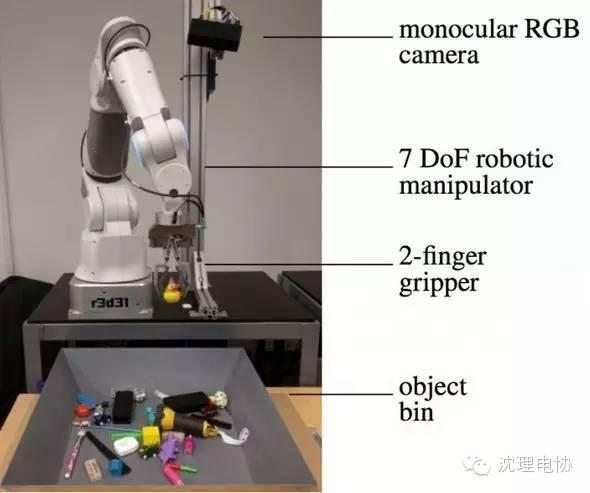
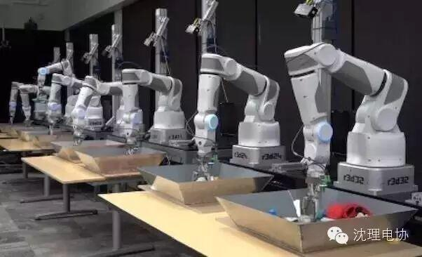
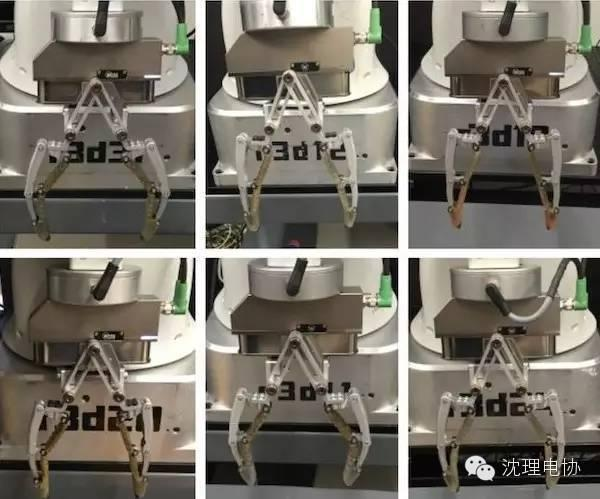

谷歌机械臂80万次抓取练习——哦，它们在深度学习

我猜，要你把东西捡起来绝对没问题。好棒！这是因为当你还是个小屁孩的时候，你已经在没日没夜地抓东西、掉东西，并从经验中学习。可是机器人不想就此虚度他们的童年，总得有办法加快进程吧——在Google Research，十多个机器人手臂连续数月地在捡起不同的物品，重的、轻的、扁的、大的、小的、硬的、软的、还有半透明的（虽然不是同时）。研究员们告诉我们为何他们的方法独一无二，以及为什么80万次抓取（天啦撸！）还只是个开头。
为什么动物们抓取物件完全没问题，部分原因是眼睛，而不仅仅是手。你可以闭着眼睛抓起一个物品，但是如果你能看见手与物品之间的互动，你会好得多。在机器人领域，这叫做视觉伺服，除了能增加抓取的进准度，还能让机器人抓取正在移动或改变方向的物品，这在烦死人的“真实世界”中非常普遍。


Image: Google Research
教会机器人不容易，因为在传感器信息和动作之间没有必然联系，尤其是当你一直有无数的传感信息输入（就像人在视觉系统里一样）。聪明的办法不是填鸭式教学，而是让机器人自学成才。在Google Research，一组研究员在Google X同事的帮助下让一个7-DoF机器人手臂抓起杂乱的物品，利用单眼视觉伺服和深度卷积神经网络（CNN）来预测抓取结果。卷积神经网络会持续自我训练，开始失败如山倒，然后渐入佳境。Google为了加快进程，让14个机器人同时投入工作。这完全是全自动的：人只需要往盘子里装上东西，然后打开电源开关。



一个数据收集试验中的机器人。每个单元包括一个七自由度的手臂，带有两个手指的抓取器，和一个从机器人肩膀上俯视下来的摄像头。研究员说摄像头记录了单眼RGB和深度图像，但只有单眼RGB图像用于预测抓取成功。


“实质上，通过观察自己手臂的运动，机器人时时刻刻都在预测接下来哪种运动会把成功的几率最大化。这带来了持续的反馈：我们可以称作眼手协调。观察了80万次机器人的抓取，相当于大约3000小时的机器人练习，我们可以略见智能反应行为的端倪。机器人观察着自己的抓取，并实时纠正自己的行动。它还表现出了非常有趣的抓取前动作，例如将一个单独物品从一对物品中分离。所有这些行为自然地从学习中出现，而非编写进系统的程序里。“
当14个机器人同时工作，信息收集就更多更快了，但与此同时，许多计划外的变量也引入了试验中。摄像头的位置略有不同，打光对每一个机器人都不太一样，以及每一个标准的抓取器都有不同类型的磨损，影响表现。



试验后机器人的抓取器。研究者说机器人“经历了不同程度的磨损和拉扯，造成外表和几何方面重要的变化。”
积极的一面是，机器人能更好处理对类似硬件细微差异和摄像头校准差异的问题，使得抓取更加强大。即便这样，这种方法没法过分概况，而且不能用于差别很大的硬件和抓取环境中（例如从架子上拿取一个物品）。研究员计划在未来尝试让训练设置更加多元化，看看他们的技术的适应性如何。他们还希望研究如何将这种方法用于“真实世界”的机器人，”在非常复杂多样的环境、物件、灯光以及磨损情况下“。
我们与Google Research的Sergey Levine聊了聊他们的研究。
IEEE Spectrum：能否说说你们的研究与其他类似研究的关联呢，例如Brown的百万物品挑战或者加州大学伯克利分校的Dex-Net？
Sergey Levine：和Dex-Net及Brown的研究一样，我们的研究也是基于大数据可以提升机器人能力这个假设。我们和他们的研究最主要的不同是，我们采取的是一种非常直接和数据导向的方法，依靠最少的前期信息，来解决抓取这个非常具体的问题。Dex-Net使用基于模型的方法和模拟数据，而Brown的目标更大，是扫描非常多的物品（我们的方法不收集扫描数据，而只是凭经验学会抓取）。
为什么数据的量很重要，从更多的数据中到底能发现什么（真的能发现什么吗？）
任何时刻，我们都在使用六只十四个机器人手臂（随着试验的进展，更多机器人上线了）。我们还在研究实际上需要多少信息，还没有官方数据，但是非正式地来说，试验从20万次抓取后开始好转，并一直在提升（如果有更多数据的话应该还会提升）。
信息量的重要性主要因为两个原因：（1）物件和抓取器的几何形状有非常多的可能性，（2）最新的模型一直在补充新数据，新模型很擅长定位他自认为正确但实际上错误的信息，为信息库增补样本，从而进一步改善新模型。
你们的硬件设计如何影响抓取物品的技术（和成功）？为什么选取这种抓取器，以及这种方法能否适用于任何抓取器？
这种方法能够直接适用于任何平行的颚形抓取器，也有可能应用于其他抓取器和手。硬件并不是专为这项实验设计的，这只是按照我们要求的数量最容易获得的硬件。尽管这样，我们使用的这种手指非常适合抓取各种物品。
如何概况这项研究的精髓，让这项技术可以用于其他环境中的其他操作器？
如果要适用于其他操作器，有可能系统必须与各种操作器及终端传感器一起训练。目前的系统是验证概念。实用性应用可能需要更多在不同环境、不同背景和其他设置（例如架子、抽屉等等）中的训练，以及一种决定抓取什么物品的更高等级的命令机制，也许将动作命令限制为工作空间的某个具体部分。
来源：雷锋网逸炫译自IEEE Spectrum


====电子协会=====
关注“沈理电协”微信公众平台，了解更多资讯！


信息部/吴心成